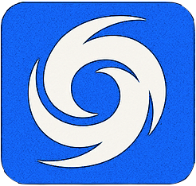

Version 1.0.0
Lei Guo
Ji Zhang
Ping Cheng
Zirui Zhou
Our mission is to help residents of Southeast Queensland stay informed, respond proactively, and remain safe during tropical cyclones. Given the region's frequent exposure to cyclone-related challenges such as evacuations, supply shortages, and communication disruptions, we created this platform as a centralized and reliable source of information. It provides real-time tracking, safety guidance, and emergency resources to strengthen community resilience.